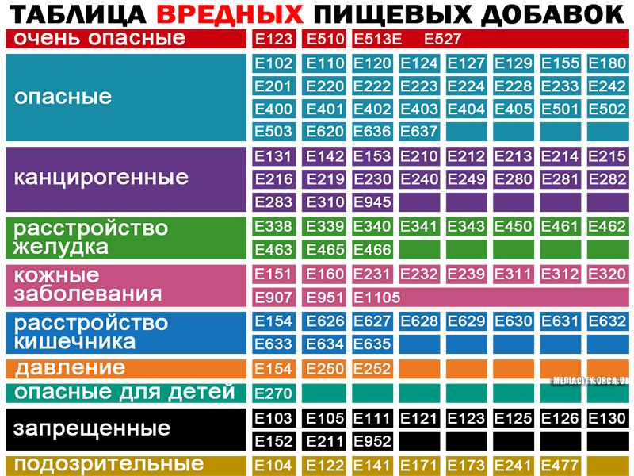

Е500 – Карбонаты натрия (Sodium Carbonates)
(i) Карбонат натрия (Sodium carbonate)
(ii) Гидрокарбонат натрия (Sodium hydrogen carbonate)
(iii) Смесь карбоната и гидрокарбоната натрия
(Sodium sesquicarbonate) – регулятор кислотности, разрыхлитель, добавка, препятствующая слеживанию и комкованию.
Е501 – Карбонаты калия (Potassium Carbonates)
(i) Карбонат калия (Potassium carbonate)
(ii) Гидрокарбонат калия (Potassium hydrogen carbonate) – регулятор кислотности, стабилизатор.
Е503 – Карбонаты аммония (Ammonium Carbonates)
(i) Карбонат аммония (Ammonuim carbonate)
(ii) Гидрокарбонат аммония (Ammonuim hydrogen carbonate) – регулятор кислотности, разрыхлитель.
Е504 – Карбонаты магния (Magnesium Carbonates)
(i) Карбонат магния (Magnesium carbonate)
(ii) Гидрокарбонат магния (Magnesium hydrogen carbonate) – регулятор кислотности, добавка, препятствующая слеживанию и комкованию, стабилизатор цвета.
Е505 – Карбонат железа (Ferrous Carbonate) – регулятор кислотности.
Е507 – Соляная кислота (Hydrochloric Acid) – регулятор кислотности.
Е508 – Хлорид калия (Potassium Chloride) – желирующий агент.
Е509 – Хлорид кальция (Calcium Chloride) – отвердитель.
Е510 – Хлорид аммония (Ammonium Chloride) – улучшитель муки и хлеба.
Е511 – Хлорид магния (Magnesium Chloride) – отвердитель.
Е512 – Хлорид олова. Вызывает рвоту, встречается в консервах!
Е513 – Серная кислота (Sulphuric Acid) – регулятор кислотности.
Е514 – Сульфаты натрия (Sodium Sulphates) – регулятор кислотности.
Е515 – Сульфаты калия (Potassium Sulphates) – регулятор кислотности.
Е516 – Сульфаты кальция (Calcium Sulphates) – улучшитель муки и хлеба, комплексообразователь, отвердитель.
Е517 – Сульфаты аммония (Ammonium Sulphates) – улучшитель муки и хлеба, стабилизатор.
Е518 – Сульфаты магния (Magnesium Sulphates) – отвердитель.
Е519 – Сульфат меди (Cypric Sulphate) – фиксатор цвета, консервант.
Е520 – Сульфат алюминия (Aluminium Sulphate) – отвердитель.
Е521 – Сульфат алюминия – натрия, квасцы алюмо-натриевые (Aluminium Sodium Sulphate) – отвердитель.
Е522 – Сульфат алюминия – калия, квасцы алюмо-калиевые (Aluminium Potassium Sulphate) – регулятор кислотности, стабилизатор.
Е523 – Сульфат алюминия-аммония, квасцы алюмоаммиачные (Aluminium Ammonium Sulphate) – стабилизатор, отвердитель.
Е524 – Гидроксид натрия (Sodium Hydroxide) – регулятор кислотности.
Е525 – Гидроксид калия (Potassium Hydroxide) – регулятор кислотности.
Е526 – Гидроксид кальция (Calcium Hydroxide) – регулятор кислотности, отвердитель.
Е527 – Гидроксид аммония (Ammonium Hydroxide) – регулятор кислотности.
Е528 – Гидроксид магния (Magnesium Hydroxide) – регулятор кислотности, стабилизатор цвета.
Е529 – Оксид кальция (Calcium Oxide) – регулятор кислотности, улучшитель муки и хлеба.
Е530 – Оксид магния (Magnesium Oxide) – добавка, препятствующая слеживанию и комкованию.
Е535 – Ферроцианид натрия (Sodium Ferrocyanide) – добавка, препятствующая слеживанию и комкованию.
Е536 – Ферроцианид калия (Potassium Ferrocyanide) – добавка, препятствующая слеживанию и комкованию.
Е538 – Ферроцианид кальция (Calcium Ferrocyanide) – добавка, препятствующая слеживанию и комкованию.
Е539 – Тиосульфат натрия (Sodium Thiosulphate) – антиокислитель, комплексообразователь.
Е541 – Алюмофосфат натрия (sodium aluminium phosphate)
(i) Кислотный (Acidis)
(ii) Основной (Basic) – регулятор кислотности, эмульгатор.
Е542 – Костный фосфат (фосфат кальция) (Bone Phosphate (essentiale Calcium phosphate, tribasic)) – эмульгатор, добавка, препятствующая слеживанию и комкованию, водоудерживающий агент.
Е550 – Силикаты натрия (Sodium Silicates)
(i) Силикат натрия (Sodium silicate)
(ii) мета-Силикат натрия (Sodium metasilicate) – добавка, препятствующая слеживанию и комкованию.
Е551 – Диоксид кремния аморфный (Silicon Dioxide Amorphous) – добавка, препятствующая слеживанию и комкованию.
Е552 – Силикат кальция (Calcium Silicate) – добавка, препятствующая слеживанию и комкованию.
Е553 – Силикаты магния (Magnesium Silicates)
(i) Силикат магния (Magnesium silicate)
(ii) Трисиликат магния (Magnesium trisilicate)
(iii) Тальк (Talc) – добавка, препятствующая слеживанию и комкованию, порошок-носитель.
Е554 – Алюмосиликат натрия (Sodium Alumino-Silicate) – добавка, препятствующая слеживанию и комкованию.
Е555 – Алюмосиликат калия (Potassium Aluminium Silicate) – добавка, препятствующая слеживанию и комкованию.
Е556 – Алюмосиликат кальция (Calcium Aluminium Silicate) – добавка, препятствующая слеживанию и комкованию.
Е558 – Бентонит (Bentonite) – добавка, препятствующая слеживанию и комкованию.
Е559 – Алюмосиликат (Aluminium Silicate) – добавка, препятствующая слеживанию и комкованию.
Е560 – Силикат калия (Potassium Silicate) – добавка, препятствующая слеживанию и комкованию.
Е570 – Жирные кислоты (Fatty Acids) – стабилизатор пены, глазирователь, пеногаситель.
Е574 – Глюконовая кислота (D-) (Gluconic Acid (D-)) – регулятор кислотности, разрыхлитель. Не более 20 гр в день!
Е575 – Глюконо-дельта лактон (Glucono Delta-Lactone) – регулятор кислотности, разрыхлитель. Не более 20 гр в день!
Е576 – Глюконат натрия (Sodium Gluconate) – комплексообразователь. Не более 20 гр в день!
Е577 – Глюконат калия (Potassium Gluconate) – комплексообразователь. Не более 20 гр в день!
Е578 – Глюконат кальция (Calcium Gluconate) – регулятор кислотности, отвердитель. Не более 20 гр в день!
Е579 – Глюконат железа (Ferrous Gluconate) – стабилизатор окраски. Не более 20 гр в день!
Е580 – Глюконат магния (Magnesium Gluconate) – регулятор кислотности, отвердитель.
Е585 – Лактат железа (Ferrous Lactate) – стабилизатор окраски.